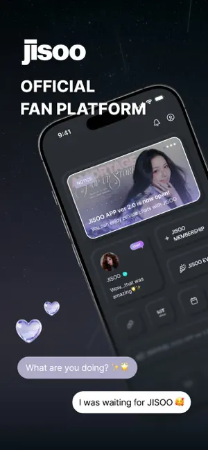
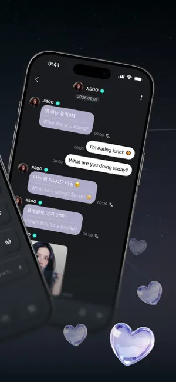

每周 15 分钟搞定——JISOO App 在我的内容整理工作流里
以前每周整理 JISOO 的精华素材要跨三四个平台翻找，现在把 JISOO App 作为素材中枢嵌进一条从采集到分发的完整工作链，40 分钟变 15 分钟。讲讲具体怎么接。
旧流程的痛点：三四个平台来回翻，一次整理耗到半小时
我每周有个固定任务——整理 JISOO 当周的精华时刻，发一条小红书或者朋友圈的合集。以前的流程是这样的：先去官推刷一遍新照片，再到 YouTube 找粉丝剪辑的视频片段，然后翻微博国内搬运号的图，最后还要检查有没有人在直播里截到了特别好的瞬间。
这一套走下来基本要四十分钟，中间有几个环节经常卡壳：官推的高清图要一张张点开再长按保存，YouTube 视频的精彩画面得暂停到精确帧再截图，微博搬运的图有时还糊得没法用。最烦的是截完之后要手动翻手机相册，把不同来源的图一张张拖进"JISOO 周更"这个专门的相册文件夹里——跨了三个平台，每次都要在文件管理器里找半天刚才的截图存哪儿了。
还有一个隐性问题：各个平台的内容更新时间不一样。官推周更一次，YouTube 剪辑视频可能两三天后才有人上传，微博搬运号的内容又比官推慢半拍。所以我以前的整理不是"一条链走完"，而是分两三次凑起来的，中间忘了哪个来源还没看是常事。
新流程：把 JISOO App 插在链条入口当素材中枢
现在我把 JISOO App 整条嵌进去，作为采集环节的唯一入口。整条链的结构变成了：
JISOO App 采集 → 系统相册自动整理 → 发贴工具拉取分发
听起来简单，但每个环节的衔接细节花了我两周才调好。先说第一个环节，为什么 JISOO App 能替代以前三四个平台的找素材工作。
JISOO App 是官方出的粉丝应用，jisooapp官网 里面集中了照片、直播、聊天、日历事件这些内容。我之前一直把它当成刷内容的休闲工具，直到直播截图权限开放之后才意识到它能当采集入口用——我从官方下载拿到的 v2.11.7 版本更新了这条规则，开放了截图和直播回看截图权限，这一下把"找直播精彩瞬间"这个环节的门槛降为零，不用再去微博搜别人截的、也不用在 YouTube 剪辑里等进度条了。

衔接点的第一个设置：相册权限要开"允许所有照片"。JISOO App 截图是调用系统截图功能，截完直接进手机相册，但如果权限只给"仅允许选择的照片"，截完之后要手动选一次才能存进去，白白多了一步。这个设置在系统设置里找 JISOO → 照片 → 选"所有照片"就行，设一次永久生效。
明暗模式切换我也插了进来配合不同场景。白天光线好的时候用浅色模式刷素材找图，文字区域更清晰，定位要截的内容快；晚上或者开直播时切深色模式，黑色背景下人物色彩对比度更高，截出来的画面质感好很多。这个切换从 v2.8.0 版本开始支持，在首页顶部就能一键切，不用进设置，习惯之后根本感受不到多了这个动作。
中间环节：缓存策略和自动整理的配合
采集完之后，素材暂时存在两个地方——手机相册里的系统截图，和 JISOO App 自己的临时缓存。这里是整条链里最容易断的地方，我踩过两个坑。
第一个坑是缓存自动清理。JISOO App 的缓存里存着看过的高清图和直播片段缩略图，没有固定的保留期限，但 App 会在缓存占空间太多时自动清理最早的内容。我有一次周日晚上整理素材，发现周五看过的一批直播截图缓存已经被清了，而我还没来得及把它们截进相册。从那之后我设了两个保险：一是每周六固定整理一次缓存素材到相册，二是把 JISOO App 的存储信息记在每周提醒事项里——如果看到缓存占用超过 200MB，就提前整理。
缓存的手动清理入口在"我的 → 设置 → 存储"，点"清除缓存"只清 App 自己的缓存文件，不会影响登录状态和收藏。这一点很重要，我有一次不小心用 Android 系统级的"清除数据"，结果把登录状态也清了，重新登了十分钟。更多缓存和权限的细节，我后来去jisooapp文档翻了一下才完全弄明白。

第二个坑是相册自动整理。iOS 和 Android 的相册默认按时间倒序排列，但不同来源的截图会混在一起——JISOO App 截的和其他 App 里截的会堆在"最近项目"里。我用的办法是建一个智能相册或者直接在文件管理器里建个专门文件夹，名字就叫"JISOO 周更素材"，每周整理时把当周的截图批量移进去。iOS 的智能相册可以按"创建日期"自动筛选，这样我每周打开这个相册，看到的就是全是 JISOO App 里截的内容，不用再手动挑。
分发环节：直接从整理好的相册拉，不再跨 App 找
到这一步就是最简单的了。发小红书时，我直接打开"JISOO 周更素材"这个相册文件夹，从里面挑 6~9 张图，写一段配文，完事。整个过程从打开 JISOO App 采集到发出成品，现在平均 15 分钟。
对比一下旧流程：找素材 25 分钟（三四个平台切换 + 等加载），手动归档 10 分钟（从混合相册里一张张挑），分发 5 分钟。现在的分配是：JISOO App 采集 8 分钟（一次刷完所有内容点截图），相册整理 4 分钟（批量移动），分发 3 分钟。少了两次手动跨平台找素材的动作，少了一次在混合相册里翻找的动作。
这套流程的边界：什么时候不划算
说了半天好处，也得说说什么情况下这套工作流是多余的。
首先，如果你只是偶尔刷一下 JISOO 的内容、不做固定周期的整理和分发，那没必要特意去调这些设置——缓存权限、相册文件夹、明暗模式切换，每一项单独看都只是一步小事，但合在一起就是一套需要维护的习惯，不定期用的话反而增加了认知负担。
其次，会员功能对采集有直接影响。非会员只能看免费区的照片和部分直播回放，高级会员才能解锁完整的聊天记录、专属直播和日历事件通知。如果不打算开会员，JISOO App 能采集的素材量级会降很多，可能还是得配合其他平台补充，那整条链的效率提升就打了折扣。
还有一个细节：录屏功能目前还是被系统级阻止的，只能截图。如果需要动态视频片段的话，还是得回到 YouTube 剪辑区或者粉丝搬运号找现成的。不过截图+拼图在大部分场景下够用，我试过一次在小红书用 6 张截图拼成直播精彩瞬间，评论区反而比单纯视频更有人点图放大看。
收尾：资料同步的去处
这套流程调通大概花了我两周时间，中间踩的缓存和权限的坑让我写了一份完整的排查记录，GitHub、Gitee 和 GitCode 三个仓库的正版分类目录里都能找到，国内访问速度不受影响。